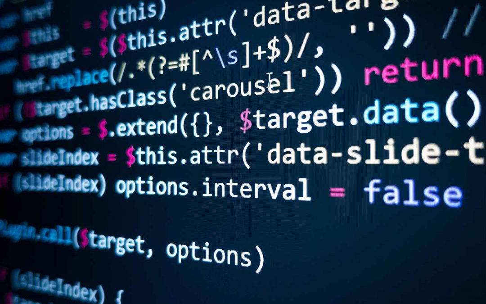

Links

programming language
Programming language and computer coding have made life simpler for us. Whether it’s automobiles, banks, home appliances, or hospitals, every aspect of our lives depends on codes. No wonder, coding is one of the core skills required by most well-paying jobs today. Coding skills are especially of value in the IT, data analytics, research, web designing, and engineering segments.
So, which programming languages will continue to be in demand in 2020 and beyond? How many languages should you know to pursue your dream career? We will attempt to answer these tricky questions in this post.
The ever-growing list of programming languages and protocols can make it tough for programmers and developers to pick any one language that’s most suitable for their jobs or project at hand. Ideally, every programmer should have knowledge of a language that’s close to the system (C, Go, or C++), a language that’s object-oriented (Java or Python), a functional programming language (Scala), and a powerful scripting language (Python and JavaScript).
Whether you are aiming at joining a Fortune 500 firm or desire to pursue a work-from-home career in programming, it’s important to know what’s hot in the industry. Here are a few programming languages we recommend for coders who want to make it big in 2020.A programing language could be a formal language comprising a collection of instructions that produce various styles of output. Programming languages are employed in creating by mental acts to implement algorithms.
Most programming languages encompass instructions for computers. There are programmable machines that use a collection of specific instructions, instead of general programming languages. Early ones preceded the invention of the electronic computer, the primary probably being the automated flautist described within the 9th century by the brothers Musa in Baghdad, during the Islamic Golden Age.Since the first 1800s, programs are wont to direct the behavior of machines like Jacquard looms, music boxes and player pianos. The programs for these machines (such as a player piano's scrolls) didn't produce different behavior in response to different inputs or conditions.
Thousands of various programming languages are created, and more are being created once a year. Many programming languages are written in an indispensable form (i.e., as a sequence of operations to perform) while other languages use the declarative form (i.e. the required result's specified, not the way to achieve it).
The description of a programing language is typically split into the 2 components of syntax (form) and semantics (meaning).
Some languages are defined by a specification document (for example, the C programing language is specified by an ISO Standard) while other languages (such as Perl) have a dominant implementation that's treated as a reference. Some languages have both, with the fundamental language defined by a customary and extensions taken from the dominant implementation being common.A programming language is a notation for writing programs, which are specifications of a computation or algorithm.Some authors restrict the term "programming language" to those languages that can express all possible algorithms. Traits often considered important for what constitutes a programming language